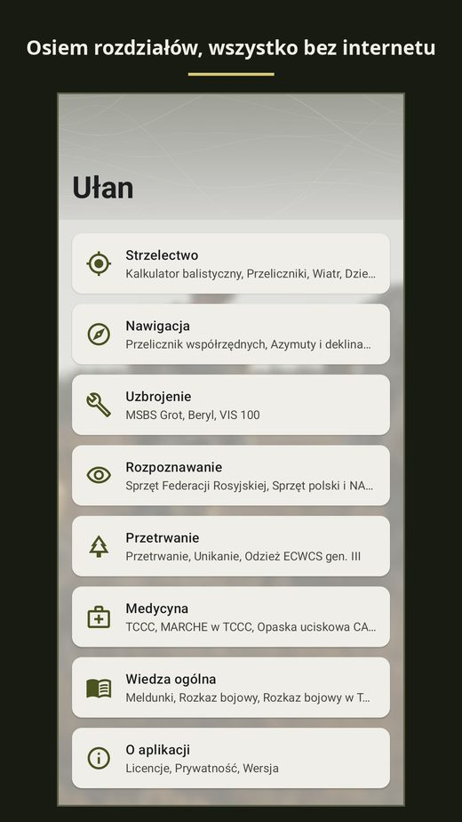
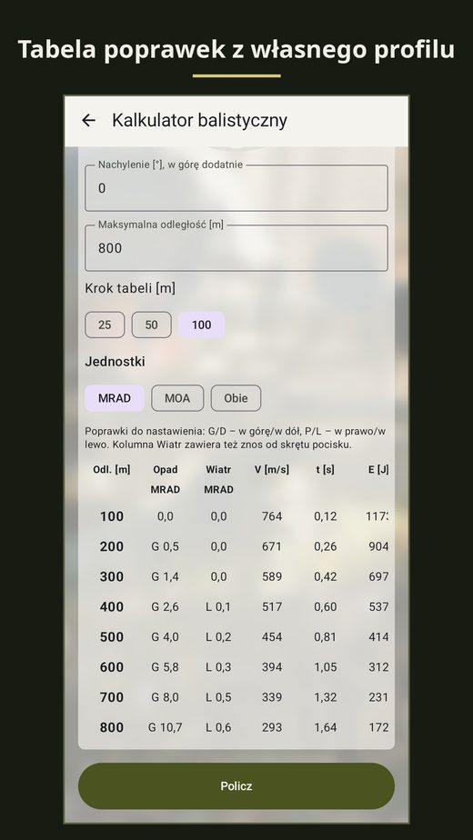
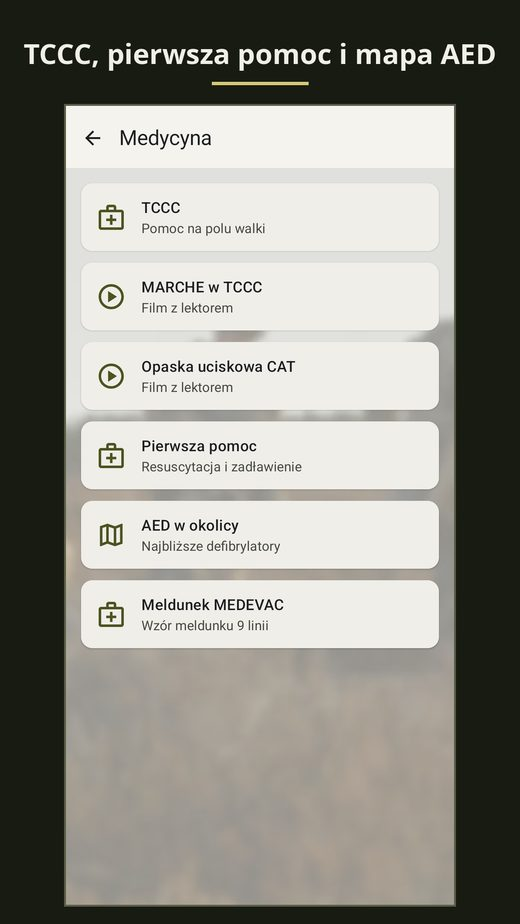

Ułan
Android app
Calculators, narrated videos and knowledge cards for the individual training of a soldier. Works offline and collects no data.
Why it exists
A soldier gets knowledge from a dozen sources: manuals, slides, class notes, videos. In the field none of them is at hand, but the phone always is.
Ułan gathers that knowledge in one app that works without a network. There is no account, no adverts and no analytics.
What is inside
- shooting: a ballistic calculator with profiles for the Grot, Beryl, Bor and Sako TRG M10, MOA and mil converters, dry-fire drills, a shooting log,
- land navigation: coordinates in degrees, UTM and MGRS, azimuth, declination, compass, marching on a bearing,
- equipment recognition: 152 cards of Russian equipment and 79 cards of Polish and NATO equipment, a quiz in two modes,
- medicine: TCCC with the MARCHE card, first aid under the ERC 2025 guidelines, 17,616 AED defibrillators from OpenStreetMap stored in the app,
- general military knowledge: report forms SALUTE, SALT, GOTWA, LACE and MIST, the combat order, the SARNEG cipher, the NATO alphabet,
- 14 narrated training videos: azimuth, Polaris, MGRS, the mil-dot reticle, the tourniquet, the linear ambush and more.
What is not there yet
The survival, TCCC and first-aid cards have not been reviewed by an instructor. Each says so and none replaces training. The recognition features of the equipment cards were written by an AI model and await a check by someone who knows the equipment.
Privacy
The app asks for one permission: location, only on the AED search screen. It has no internet permission. Everything you type stays on the phone and goes away with „Delete all data”.
Language
The app is in Polish.
Screenshots


